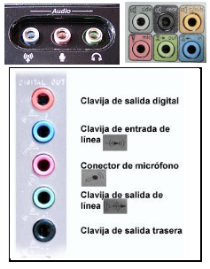

2.1. La tarjeta de sonido
La tarjeta de sonido o placa de sonido es un dispositivo que permite la entrada y salida de audio bajo el control de un programa informático. El uso típico de las tarjetas de sonido es proveer a las aplicaciones multimedia del componente de audio.
En principio cada conector de la tarjeta de sonido tenia asociada una función determinada (entrada de audio -micro-, salida de audio -altavoces- , subwofer, etc).
En las actuales tarjetas la tendencia es simplificar el número de puertos de forma que uno solo pueda realizar más de una función y que estos se sitúen en la parte frontal del ordenador o integrados en el monitor.
En las imágenes siguientes se muestran ejemplos típicos de puertos codificados en colores que indican su función:

Este artículo está licenciado bajo Creative Commons Attribution-NonCommercial 2.5 License
Formació del Professorat - CEFIRE